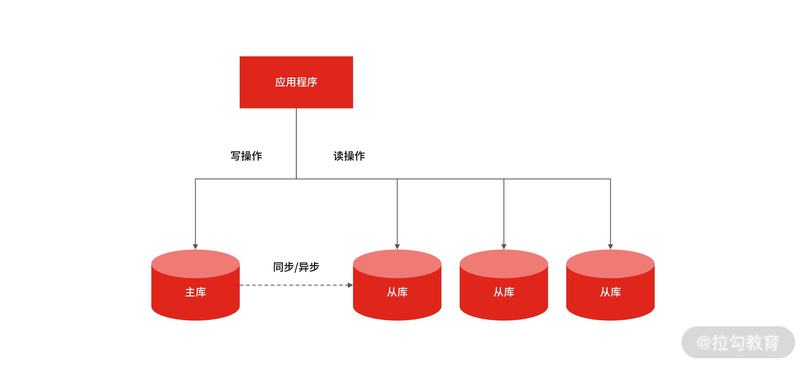
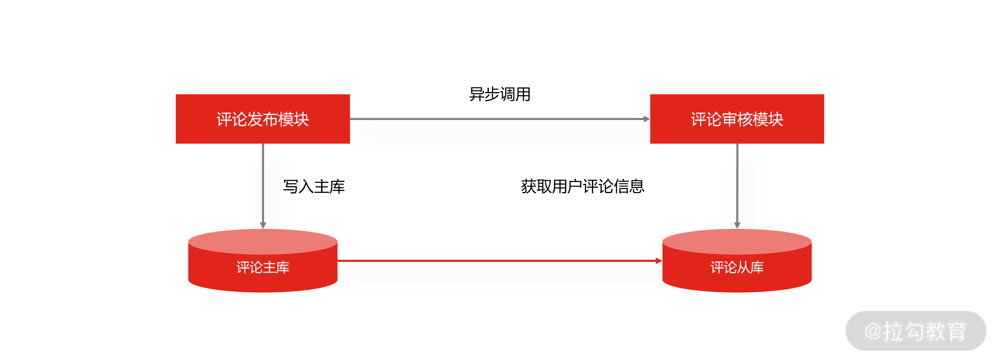

- 00 开篇词 中高级研发面试，逃不开架构设计这一环.md.html
- 01 研发工程师想提升面试竞争力，该具备这三个技术认知.md.html
- 02 研发工程师如何用架构师视角回答架构设计方案？.md.html
- 03 面试官如何考察与 CAP 有关的分布式理论？.md.html
- 04 亿级商品存储下，如何深度回答分布式系统的原理性问题？.md.html
- 05 海量并发场景下，如何回答分布式事务一致性问题？.md.html
- 06 分布式系统中，如何回答锁的实现原理？.md.html
- 07 RPC：如何在面试中展现出“造轮子”的能力？.md.html
- 08 MQ：如何回答消息队列的丢失、重复与积压问题.md.html
- 08 案例串联 如何让系统抗住双十一的预约抢购活动？.md.html
- 09 如何回答 MySQL 的索引原理与优化问题？.md.html
- 10 如何回答 MySQL 的事务隔离级别和锁的机制？.md.html
- 11 读多写少：MySQL 如何优化数据查询方案？.md.html
- 12 写多读少：MySQL 如何优化数据存储方案？.md.html
- 13 缓存原理：应对面试你要掌握 Redis 哪些原理？.md.html
- 14 缓存策略：面试中如何回答缓存穿透、雪崩等问题？.md.html
- 15 如何向面试官证明你做的系统是高可用的？.md.html
- 16 如何从架构师角度回答系统容错、降级等高可用问题？.md.html
- 17 如何向面试官证明你做的系统是高性能的？.md.html
- 18 如何从架构师角度回答怎么应对千万级流量的问题？.md.html
- 19 彩蛋 互联网架构设计面试，你需要掌握的知识体系.md.html
- 结束语 程序员的道、术、势.md.html
- 捐赠
11 读多写少：MySQL 如何优化数据查询方案？
今天这一讲，我们将面试继续聚焦到 MySQL 上，看一看当面试官提及“在读多写少的网络环境下，MySQL 如何优化数据查询方案”时，你要从哪些角度出发回答问题。
案例背景
假设你目前在某电商平台就职，公司面临双 11 大促，投入了大量营销费用用于平台推广，这带来了巨大的流量，如果你是订单系统的技术负责人，要怎么应对突如其来的读写流量呢？
这是一个很典型的应用场景，我想很多研发同学会回答：通过 Redis 作为 MySQL 的缓存，然后当用户查看“订单中心”时，通过查询订单缓存，帮助 MySQL 抗住大部分的查询请求。
如果你也是这么想，说明没认真思考过问题。因为应用缓存的原则之一是保证缓存命中率足够高，不然很多请求会穿透缓存，最终打到数据库上。然而在“订单中心”这样的场景中，每个用户的订单都不同，除非全量缓存数据库订单信息（又会带来架构的复杂度），不然缓存的命中率依旧很低。
所以在这种场景下，缓存只能作为数据库的前置保护机制，但是还会有很多流量打到数据库上，并且随着用户订单不断增多，请求到 MySQL 上的读写流量会越来越多，当单台 MySQL 支撑不了大量的并发请求时，该怎么办？
案例分析
互联网大部分系统的访问流量是读多写少，读写请求量的差距可能达到几个数量级，就好比你在京东上的商品的浏览量肯定远大于你的下单量。
所以你要考虑优化数据库来抗住高查询请求，首先要做的就是区分读写流量区，这样才方便针对读流量做单独扩展，这个过程就是流量的“读写分离”。
读写分离是提升 MySQL 并发的首选方案，因为当单台 MySQL 无法满足要求时，就只能用多个具有相同数据的 MySQL 实例组成的集群来承担大量的读写请求。

MySQL 主从结构
MySQL 做读写分离的前提，是把 MySQL 集群拆分成“主 + 从”结构的数据集群，这样才能实现程序上的读写分离，并且 MySQL 集群的主库、从库的数据是通过主从复制实现同步的。
那么面试官会问你“MySQL 集群如何实现主从复制？” 换一种问法就是“当你提交一个事务到 MySQL 集群后，MySQL 都执行了哪些操作？”面试官往往会以该问题为切入点，挖掘你对 MySQL 集群主从复制原理的理解，然后再模拟一个业务场景，让你给出解决主从复制问题的架构设计方案。
所以，针对面试官的套路，你要做好以下的准备：
- 掌握读多写少场景下的架构设计思路，知道缓存不能解决所有问题，“读写分离”是提升系统并发能力的重要手段。
- 深入了解数据库的主从复制，掌握它的原理、问题，以及解决方案。
- 从实践出发，做到技术的认知抽象，从方法论层面来看设计。
案例解答
MySQL 主从复制的原理
无论是“MySQL 集群如何实现主从复制”还是“当你提交一个事务到 MySQL 集群后，MySQL 集群都执行了哪些操作？”面试官主要是问你：MySQL 的主从复制的过程是怎样的？
总的来讲，MySQL 的主从复制依赖于 binlog ，也就是记录 MySQL 上的所有变化并以二进制形式保存在磁盘上。复制的过程就是将 binlog 中的数据从主库传输到从库上。这个过程一般是异步的，也就是主库上执行事务操作的线程不会等待复制 binlog 的线程同步完成。
为了方便你记忆，我把 MySQL 集群的主从复制过程梳理成 3 个阶段。
- 写入 Binlog：主库写 binlog 日志，提交事务，并更新本地存储数据。
- 同步 Binlog：把 binlog 复制到所有从库上，每个从库把 binlog 写到暂存日志中。
- 回放 Binlog：回放 binlog，并更新存储数据。

主从复制过程
但在面试中你不能简单地只讲这几个阶段，要尽可能详细地说明主库和从库的数据同步过程，为的是让面试官感受到你技术的扎实程度（详细过程如下）。
- MySQL 主库在收到客户端提交事务的请求之后，会先写入 binlog，再提交事务，更新存储引擎中的数据，事务提交完成后，返回给客户端“操作成功”的响应。
- 从库会创建一个专门的 I/O 线程，连接主库的 log dump 线程，来接收主库的 binlog 日志，再把 binlog 信息写入 relay log 的中继日志里，再返回给主库“复制成功”的响应。
- 从库会创建一个用于回放 binlog 的线程，去读 relay log 中继日志，然后回放 binlog 更新存储引擎中的数据，最终实现主从的数据一致性。
在完成主从复制之后，你就可以在写数据时只写主库，在读数据时只读从库，这样即使写请求会锁表或者锁记录，也不会影响读请求的执行。

一主多从
同时，在读流量比较大时，你可以部署多个从库共同承担读流量，这就是“一主多从”的部署方式，你在垂直电商项目中可以用该方式抵御较高的并发读流量。另外，从库也可以作为一个备库，以避免主库故障导致的数据丢失。
MySQL 一主多从
当然，一旦你提及“一主多从”，面试官很容易设陷阱问你：那大促流量大时，是不是只要多增加几台从库，就可以抗住大促的并发读请求了？
当然不是。
因为从库数量增加，从库连接上来的 I/O 线程也比较多，主库也要创建同样多的 log dump 线程来处理复制的请求，对主库资源消耗比较高，同时还受限于主库的网络带宽。所以在实际使用中，一个主库一般跟 2～3 个从库（1 套数据库，1 主 2 从 1 备主），这就是一主多从的 MySQL 集群结构。
其实，你从 MySQL 主从复制过程也能发现，MySQL 默认是异步模式：MySQL 主库提交事务的线程并不会等待 binlog 同步到各从库，就返回客户端结果。这种模式一旦主库宕机，数据就会发生丢失。
而这时，面试官一般会追问你“MySQL 主从复制还有哪些模型？”主要有三种。
- 同步复制：事务线程要等待所有从库的复制成功响应。
- 异步复制：事务线程完全不等待从库的复制成功响应。
- 半同步复制：MySQL 5.7 版本之后增加的一种复制方式，介于两者之间，事务线程不用等待所有的从库复制成功响应，只要一部分复制成功响应回来就行，比如一主二从的集群，只要数据成功复制到任意一个从库上，主库的事务线程就可以返回给客户端。
这种半同步复制的方式，兼顾了异步复制和同步复制的优点，即使出现主库宕机，至少还有一个从库有最新的数据，不存在数据丢失的风险。
讲到这儿，你基本掌握了 MySQL 主从复制的原理，但如果面试官想挖掘你的架构设计能力，还会从架构设计上考察你怎么解决 MySQL 主从复制延迟的问题，比如问你“在系统设计上有哪些方案可以解决主从复制的延迟问题？”
从架构上解决主从复制延迟
我们来结合实际案例设计一个主从复制延迟的解决方案。
在电商平台，每次用户发布商品评论时，都会先调用评论审核，目的是对用户发布的商品评论进行如言论监控、图片鉴黄等操作。
评论在更新完主库后，商品发布模块会异步调用审核模块，并把评论 ID 传递给审核模块，然后再由评论审核模块用评论 ID 查询从库中获取到完整的评论信息。此时如果主从数据库存在延迟，在从库中就会获取不到评论信息，整个流程就会出现异常。

主从延迟影响评论读取的实时性
这是主从复制延迟导致的查询异常，解决思路有很多，我提供给你几个方案。
- 使用数据冗余
可以在异步调用审核模块时，不仅仅发送商品 ID，而是发送审核模块需要的所有评论信息，借此避免在从库中重新查询数据（这个方案简单易实现，推荐你选择）。但你要注意每次调用的参数大小，过大的消息会占用网络带宽和通信时间。
- 使用缓存解决
可以在写入数据主库的同时，把评论数据写到 Redis 缓存里，这样其他线程再获取评论信息时会优先查询缓存，也可以保证数据的一致性。
不过这种方式会带来缓存和数据库的一致性问题，比如两个线程同时更新数据，操作步骤如下：

线程 A 先更新数据库为 100，此时线程 B 把数据库和缓存中的数据都更新成了 200，然后线程 A 又把缓存更新为 100，这样数据库中的值 200 和缓存中的值 100 就不一致了，解决这个问题，你可以参考 06 讲。
总的来说，通过缓存解决 MySQL 主从复制延迟时，会出现数据库与缓存数据不一致的情况。虽然它和“使用数据冗余”的方案相比并不优雅，但我还是建议你在面试中做一下补充，这样可以引出更多的技术知识，展现自己与其他人的差异。
- 直接查询主库
该方案在使用时一定要谨慎，你要提前明确查询的数据量不大，不然会出现主库写请求锁行，影响读请求的执行，最终对主库造成比较大的压力。
当然了，面试官除了从架构上考察你对 MySQL 主从复制延迟的理解，还会问你一些扩展问题，比如：当 MySQL 做了主从分离后，对于数据库的使用方式就发生了变化，以前只需要使用一个数据库地址操作数据库，现在却要使用一个主库地址和多个从库地址，并且还要区分写入操作和查询操作，那从工程代码上设计，怎么实现主库和从库的数据访问呢？
实现主库和从库的数据库访问
一种简单的做法是：提前把所有数据源配置在工程中，每个数据源对应一个主库或者从库，然后改造代码，在代码逻辑中进行判断，将 SQL 语句发送给某一个指定的数据源来处理。
这个方案简单易实现，但 SQL 路由规则侵入代码逻辑，在复杂的工程中不利于代码的维护。
另一个做法是：独立部署的代理中间件，如 MyCat，这一类中间件部署在独立的服务器上，一般使用标准的 MySQL 通信协议，可以代理多个数据库。
该方案的优点是隔离底层数据库与上层应用的访问复杂度，比较适合有独立运维团队的公司选型；缺陷是所有的 SQL 语句都要跨两次网络传输，有一定的性能损耗，再就是运维中间件是一个专业且复杂的工作，需要一定的技术沉淀。
技术认知
以上就是你在应聘初中级工程师时需要掌握的内容，如果你应聘的是高级研发工程师，在回答问题时，还要尽可能地展示自己对 MySQL 数据复制的抽象能力。因为在网络分布式技术错综复杂的今天，如果你能将技术抽象成一个更高层次的理论体系，很容易在面试中脱颖而出。
以 Raft 协议为例，其内部是通过日志复制同步的方式来实现共识的，例如在领导者选举成功后，它就会开始接收客户端的请求，此时每一个客户端请求都将被解析成一条指令日志，然后并行地向其他节点发起通知，要求其他节点复制这个日志条目，并最终在各个节点中回放日志，实现共识。
我们抽象一下它的运作机制：

运作机制
如果客户端将要执行的命令发送给集群中的一台服务器，那么这台服务器就会以日志的方式记录这条命令，然后将命令发送给集群内其他的服务，并记录在其他服务器的日志文件中，注意，只要保证各个服务器上的日志是相同的，并且各服务器都能以相同的顺序执行相同的命令的话，那么集群中的每个节点的执行结果也都会是一样的。
这种数据共识的机制就叫复制状态机，目的是通过日志复制和回放的方式来实现集群中所有节点内的状态一致性。
其实 MySQL 中的主从复制，通过 binlog 操作日志来实现从主库到从库的数据复制的，就是应用了这种复制状态机的机制。所以这种方式不是 MySQL 特有的。
除了我上面提到的 Raft 协议以外，在 Redis Cluster 中也用到了 backlog 来实现主从节点的数据复制，其方式和 MySQL 一模一样。
可以这么说，几乎所有的存储系统或数据库，基本都用了这样一套方法来解决数据复制和备份恢复等问题。这一点你可以在学习中进一步体会。
总结
今天，我们先从一个案例出发，了解了在互联网流量读多写少的情况下，需要通过“读写分离”提升系统的并发能力，又因为“读写分离”的前提是做 “主+从”的数据集群架构，所以我们又讲了主从复制的原理，以及怎么解决主从复制带来的延迟。
总的来说，在面试中，回答 MySQL 实现读写分离问题的前提，是你要掌握这些内容（这是初中级研发工程师都需要了解并掌握的）：MySQL 主从复制的原理、模式、存在的问题，怎么解决。
对于中高级研发工程师来说，不仅要掌握这些内容，还要展现出对技术的抽象能力，例如本讲中的复制状态机的原理和应用场景。
© 2019 - 2023 Liangliang Lee. Powered by gin and hexo-theme-book.